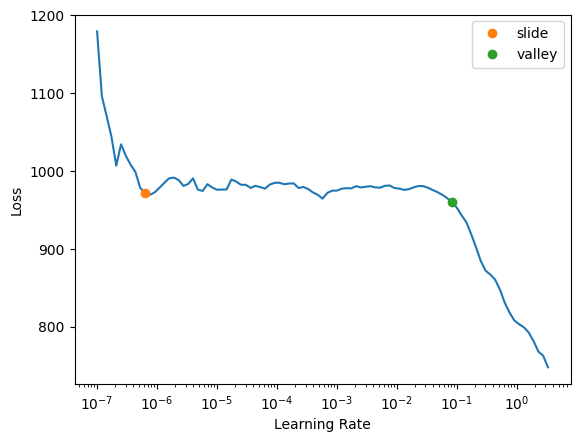

from fastai.tabular.all import *Training a Multi-Target Regression Deep Learning Model with fastai
deep learning
python
In this notebook I train single and multi-target regression tabular deep learning models using fastai, and compare the results.
Background
In this blog post I will use fastai to train a model that predicts more than one target for the Kaggle Titanic dataset.
I’ve referenced the notebook Multi-target: Road to the Top, Part 4 by Jeremy Howard as well as a derivative notebook Small models + Multi-targets by Kaggle user Archie Tram (in which he creates a test DataLoader to get predictions from the model).
Plan of Attack
Creating DataLoaders
In Jeremy’s notebook, he is classifying images of plants with two targets: disease and variety of plant.
He creates his DataLoaders object as follows:
dls = DataBlock(
blocks=(ImageBlock,CategoryBlock,CategoryBlock),
n_inp=1,
get_items=get_image_files,
get_y = [parent_label,get_variety],
splitter=RandomSplitter(0.2, seed=42),
item_tfms=Resize(192, method='squish'),
batch_tfms=aug_transforms(size=128, min_scale=0.75)
).dataloaders(trn_path)There are three blocks: 1 input ImageBlock and 2 output CategoryBlocks. The model gets the outputs with parent_label (for the disease) and a custom function get_variety (which grabs the variety column value of the given image from a DataFrame).
In my use case, I will have to follow a similar approach, albeit catered to tabular data.
Calculating Losses
Jeremy calculates loss as the sum of the following:
- Cross-Entropy loss of the disease inputs
- Cross-Entropy loss of the variety inputs
I’ll follow a similar approach, except if I use continuous variables as targets I’ll use MSE instead of Cross-Entropy.
Calculating Metrics
Similar to the loss calculation, I’ll combine the calculation of the metric for each of the two targets. For continuous variables, I’ll use RMSE.
Training a Multi-Target Model
With a rough plan outlined, I’ll start the training process with loading and cleaning the Titanic dataset.
Load and Clean Data
from pathlib import Path
cred_path = Path('~/.kaggle/kaggle.json').expanduser()
if not cred_path.exists():
cred_path.parent.mkdir(exist_ok=True)
cred_path.write_text(creds)
cred_path.chmod(0o600)import os
iskaggle = os.environ.get('KAGGLE_KERNEL_RUN_TYPE', '')
if iskaggle: path = Path("../input/titanic")
else:
path = Path('titanic')
if not path.exists():
import zipfile, kaggle
kaggle.api.competition_download_cli(str(path))
zipfile.ZipFile(f'{path}.zip').extractall(path)Downloading titanic.zip to /content100%|██████████| 34.1k/34.1k [00:00<00:00, 6.18MB/s]# load the training data and look at it
df = pd.read_csv(path/'train.csv')
df| PassengerId | Survived | Pclass | Name | Sex | Age | SibSp | Parch | Ticket | Fare | Cabin | Embarked | |
|---|---|---|---|---|---|---|---|---|---|---|---|---|
| 0 | 1 | 0 | 3 | Braund, Mr. Owen Harris | male | 22.0 | 1 | 0 | A/5 21171 | 7.2500 | NaN | S |
| 1 | 2 | 1 | 1 | Cumings, Mrs. John Bradley (Florence Briggs Thayer) | female | 38.0 | 1 | 0 | PC 17599 | 71.2833 | C85 | C |
| 2 | 3 | 1 | 3 | Heikkinen, Miss. Laina | female | 26.0 | 0 | 0 | STON/O2. 3101282 | 7.9250 | NaN | S |
| 3 | 4 | 1 | 1 | Futrelle, Mrs. Jacques Heath (Lily May Peel) | female | 35.0 | 1 | 0 | 113803 | 53.1000 | C123 | S |
| 4 | 5 | 0 | 3 | Allen, Mr. William Henry | male | 35.0 | 0 | 0 | 373450 | 8.0500 | NaN | S |
| ... | ... | ... | ... | ... | ... | ... | ... | ... | ... | ... | ... | ... |
| 886 | 887 | 0 | 2 | Montvila, Rev. Juozas | male | 27.0 | 0 | 0 | 211536 | 13.0000 | NaN | S |
| 887 | 888 | 1 | 1 | Graham, Miss. Margaret Edith | female | 19.0 | 0 | 0 | 112053 | 30.0000 | B42 | S |
| 888 | 889 | 0 | 3 | Johnston, Miss. Catherine Helen "Carrie" | female | NaN | 1 | 2 | W./C. 6607 | 23.4500 | NaN | S |
| 889 | 890 | 1 | 1 | Behr, Mr. Karl Howell | male | 26.0 | 0 | 0 | 111369 | 30.0000 | C148 | C |
| 890 | 891 | 0 | 3 | Dooley, Mr. Patrick | male | 32.0 | 0 | 0 | 370376 | 7.7500 | NaN | Q |
891 rows × 12 columns
# feature engineering
def add_features(df):
df['LogFare'] = np.log1p(df['Fare'])
df['Deck'] = df.Cabin.str[0].map(dict(A="ABC", B="ABC", C="ABC", D="DE", E="DE", F="FG", G="FG"))
df['Family'] = df.SibSp+df.Parch
df['Alone'] = df.Family == 0
df['TicketFreq'] = df.groupby('Ticket')['Ticket'].transform('count')
df['Title'] = df.Name.str.split(', ', expand=True)[1].str.split('.', expand=True)[0]
df['Title'] = df.Title.map(dict(Mr="Mr", Miss="Miss", Mrs="Mrs", Master="Master"))# add the features to our dataframe
add_features(df)# view the topmost row of the modes DataFrame
modes = df.mode().iloc[0]
modesPassengerId 1
Survived 0.0
Pclass 3.0
Name Abbing, Mr. Anthony
Sex male
Age 24.0
SibSp 0.0
Parch 0.0
Ticket 1601
Fare 8.05
Cabin B96 B98
Embarked S
LogFare 2.202765
Deck ABC
Family 0.0
Alone True
TicketFreq 1.0
Title Mr
Name: 0, dtype: object# fill missing data with the column's mode
df.fillna(modes, inplace=True)# check that we no longer have missing data
df.isna().sum()PassengerId 0
Survived 0
Pclass 0
Name 0
Sex 0
Age 0
SibSp 0
Parch 0
Ticket 0
Fare 0
Cabin 0
Embarked 0
LogFare 0
Deck 0
Family 0
Alone 0
TicketFreq 0
Title 0
dtype: int64# create training and validation index lists
splits = RandomSplitter(seed=42)(df)Create DataLoaders
I’ll take most of the code from the Why you should use a framework notebook by Jeremy, with the following changes:
- Remove
"Age"fromcont_namesand move it toy_namesalong with"Survived"which will be our two targets. - Set
n_out=2for theRegressionBlock.
I’ll treat both targets as a regression, as I wasn’t able to provide two DataBlocks for y_block.
Since I’ve filled in missing values manually, I have removed the FillMissing item from procs.
# create dataloaders object
dls = TabularPandas(
df,
splits=splits,
procs=[Categorify, Normalize],
cat_names=["Sex", "Pclass", "Embarked", "Deck", "Title"],
cont_names=["SibSp", "Parch", "LogFare", "Alone", "TicketFreq", "Family"],
y_names=["Age", "Survived"],
y_block=RegressionBlock(n_out=2)
).dataloaders(path=".")dls.show_batch()| Sex | Pclass | Embarked | Deck | Title | SibSp | Parch | LogFare | Alone | TicketFreq | Family | Age | Survived | |
|---|---|---|---|---|---|---|---|---|---|---|---|---|---|
| 0 | male | 1 | S | ABC | Mr | 1.000000e+00 | -9.897945e-09 | 3.970292 | 2.458140e-08 | 2.0 | 1.000000e+00 | 42.0 | 0.0 |
| 1 | male | 3 | S | ABC | Mr | 1.689237e-09 | -9.897945e-09 | 2.230014 | 1.000000e+00 | 1.0 | -1.856774e-08 | 18.0 | 0.0 |
| 2 | male | 2 | S | ABC | Mr | 1.000000e+00 | 2.000000e+00 | 3.358638 | 2.458140e-08 | 3.0 | 3.000000e+00 | 36.0 | 0.0 |
| 3 | male | 3 | C | ABC | Mr | 1.000000e+00 | 1.000000e+00 | 2.107689 | 2.458140e-08 | 1.0 | 2.000000e+00 | 17.0 | 0.0 |
| 4 | male | 3 | S | ABC | Mr | 1.689237e-09 | -9.897945e-09 | 2.351375 | 1.000000e+00 | 1.0 | -1.856774e-08 | 28.0 | 0.0 |
| 5 | female | 3 | S | ABC | Mrs | 1.000000e+00 | 4.000000e+00 | 3.363842 | 2.458140e-08 | 6.0 | 5.000000e+00 | 45.0 | 0.0 |
| 6 | male | 3 | S | ABC | Mr | 1.689237e-09 | -9.897945e-09 | 2.324836 | 1.000000e+00 | 1.0 | -1.856774e-08 | 23.0 | 0.0 |
| 7 | female | 3 | C | ABC | Mrs | 1.689237e-09 | -9.897945e-09 | 2.107178 | 1.000000e+00 | 1.0 | -1.856774e-08 | 24.0 | 1.0 |
| 8 | male | 3 | S | ABC | Mr | 1.689237e-09 | -9.897945e-09 | 2.188856 | 1.000000e+00 | 1.0 | -1.856774e-08 | 39.0 | 1.0 |
| 9 | female | 2 | C | ABC | Mrs | 1.000000e+00 | -9.897945e-09 | 3.436269 | 2.458140e-08 | 2.0 | 1.000000e+00 | 14.0 | 1.0 |
Create Loss Function
If I understand correctly, we will get 2 columns of predictions, and two variables of targets to compute the loss with:
def age_loss(pred, yb): return F.mse_loss(pred[:,0], yb[:,0])
def survived_loss(pred, yb): return F.mse_loss(pred[:,1], yb[:,1])
def combine_loss(pred, yb): return age_loss(pred, yb) + survived_loss(pred, yb)Create Metric Function
I’ll create an RMSE function for each target variable:
def age_rmse(pred, yb): return torch.sqrt(F.mse_loss(pred[:,0], yb[:,0]))
def survived_rmse(pred, yb): return torch.sqrt(F.mse_loss(pred[:,1], yb[:,1]))
rmse_metrics = (age_rmse, survived_rmse)learn = tabular_learner(dls, loss_func=combine_loss, metrics=rmse_metrics, layers=[10,10], n_out=2)Most times that I ran the learning rate finder, the loss was steadily increasing from the get-go. I randomly came across the following learning rate regime which looks more stable, so I’ll use the given value.
learn.lr_find(suggest_funcs=(slide, valley))SuggestedLRs(slide=6.309573450380412e-07, valley=0.14454397559165955)learn.fit(20, lr=0.1)| epoch | train_loss | valid_loss | age_rmse | survived_rmse | time |
|---|---|---|---|---|---|
| 0 | 766.320923 | 554.657837 | 23.431234 | 0.721841 | 00:00 |
| 1 | 460.486603 | 170.207932 | 13.030014 | 0.590790 | 00:00 |
| 2 | 335.931213 | 132.264999 | 11.456180 | 0.649899 | 00:00 |
| 3 | 265.317535 | 116.719322 | 10.778342 | 0.477045 | 00:00 |
| 4 | 221.392242 | 121.840828 | 11.004195 | 0.441827 | 00:00 |
| 5 | 192.420349 | 132.113815 | 11.457218 | 0.472019 | 00:00 |
| 6 | 173.592255 | 120.654694 | 10.943729 | 0.462033 | 00:00 |
| 7 | 159.223709 | 113.375626 | 10.612040 | 0.519316 | 00:00 |
| 8 | 148.853653 | 114.346222 | 10.654099 | 0.484549 | 00:00 |
| 9 | 140.409439 | 109.572639 | 10.437387 | 0.467927 | 00:00 |
| 10 | 133.942352 | 114.497719 | 10.642965 | 0.590436 | 00:00 |
| 11 | 129.807709 | 110.892578 | 10.500125 | 0.455730 | 00:00 |
| 12 | 125.972458 | 112.508110 | 10.570338 | 0.451019 | 00:00 |
| 13 | 122.350586 | 126.790512 | 11.167099 | 0.512433 | 00:00 |
| 14 | 119.345764 | 112.307846 | 10.571351 | 0.579465 | 00:00 |
| 15 | 117.329689 | 113.805359 | 10.628425 | 0.484336 | 00:00 |
| 16 | 116.328194 | 115.227859 | 10.696632 | 0.475317 | 00:00 |
| 17 | 115.390640 | 115.162354 | 10.710686 | 0.500142 | 00:00 |
| 18 | 116.044281 | 125.941689 | 11.149549 | 0.558260 | 00:00 |
| 19 | 115.501900 | 116.436340 | 10.739085 | 0.500779 | 00:00 |
After a few epochs, the RMSE values stop improving. The validation loss also fluctuates throughout the training after decreasing for the first three epochs.
Comparing Predictions to Actuals
Based on how the training went, I’m not expecting this model to be able to predict Age and Survived very well. I’ll use the validation set to get predictions and then calculate accuracy for Survived and correlation between actuals vs. predictions for Age.
preds, targ = learn.get_preds(dl=dls.valid)# Survived accuracy
(targ[:,1] == (preds[:,1]>0.5)).float().mean()tensor(0.6348)def corr(x,y): return np.corrcoef(x,y)[0][1]# Age plot
fig, ax = plt.subplots(1)
ax.axis('equal')
plt.title(f'Predicted Age vs Actual; r: {corr(preds[:,0], targ[:,0]):.2f}')
ax.scatter(preds[:,0], targ[:,0]);The model achieved shoddy accuracy (63%) and an uninspiring correlation between predicted and actual age. The model did particularly poorly in predicting ages above 40.
Comparing to Single-Target Models
I’m curious to see how the model performs when I train it for single targets. I’ll train one regression model for Age, another separate regression model for Survived, and see how their results compare to the combined two-target model.
Single Target: Age
# create dataloaders object
age_dls = TabularPandas(
df,
splits=splits,
procs=[Categorify, Normalize],
cat_names=["Sex", "Pclass", "Embarked", "Deck", "Title"],
cont_names=["SibSp", "Parch", "LogFare", "Alone", "TicketFreq", "Family"],
y_names="Age",
y_block=RegressionBlock()
).dataloaders(path=".")age_learn = tabular_learner(age_dls, metrics=rmse, layers=[10,10])I ran the learning rate finder 10 times and got similar charts each time, which tells me that something about this model is more stable than my two-target model.
age_learn.lr_find(suggest_funcs=(slide, valley))SuggestedLRs(slide=6.309573450380412e-07, valley=0.0831763744354248)
age_learn.fit(16, lr=0.1)| epoch | train_loss | valid_loss | _rmse | time |
|---|---|---|---|---|
| 0 | 781.124268 | 233.326263 | 15.275021 | 00:00 |
| 1 | 454.851532 | 408.981842 | 20.223301 | 00:00 |
| 2 | 328.806274 | 116.149773 | 10.777281 | 00:00 |
| 3 | 263.302643 | 119.088097 | 10.912749 | 00:00 |
| 4 | 219.239166 | 127.125175 | 11.274981 | 00:00 |
| 5 | 190.565811 | 111.707756 | 10.569189 | 00:00 |
| 6 | 171.005737 | 113.618858 | 10.659215 | 00:00 |
| 7 | 157.105713 | 109.284859 | 10.453939 | 00:00 |
| 8 | 146.396072 | 118.541183 | 10.887661 | 00:00 |
| 9 | 138.696716 | 107.435219 | 10.365096 | 00:00 |
| 10 | 132.795654 | 109.071220 | 10.443716 | 00:00 |
| 11 | 128.642639 | 112.930344 | 10.626869 | 00:00 |
| 12 | 124.508675 | 107.584816 | 10.372310 | 00:00 |
| 13 | 121.428909 | 113.099953 | 10.634846 | 00:00 |
| 14 | 119.856216 | 114.224464 | 10.687585 | 00:00 |
| 15 | 118.349365 | 109.042511 | 10.442342 | 00:00 |
The validation loss also fluctuates in this model’s training. The RMSE metric also does not really improve after the first couple of epochs. Similar to last time, I’ll plot the predicted age vs actual and calculate the correlation between the two:
age_preds, age_targ = age_learn.get_preds(dl=age_dls.valid)# Age plot
fig, ax = plt.subplots(1)
ax.axis('equal')
plt.title(f'Predicted Age vs Actual; r: {corr(age_preds[:,0], age_targ[:,0]):.2f}')
ax.scatter(age_preds[:,0], age_targ[:,0]);Surprisingly, the single target Age model does not perform much better than my two-target model. I get a similar correlation, and this model also fails to predict ages above around 40.
Single Target: Survived
In Jeremy’s “Why you should use a framework” notebook, he achieves about an 83% accuracy. I’ll use this as a benchmark to compare my model with.
# create dataloaders object
survived_dls = TabularPandas(
df,
splits=splits,
procs=[Categorify, Normalize],
cat_names=["Sex", "Pclass", "Embarked", "Deck", "Title"],
cont_names=["SibSp", "Parch", "LogFare", "Alone", "TicketFreq", "Family"],
y_names="Survived",
y_block=RegressionBlock()
).dataloaders(path=".")survived_learn = tabular_learner(survived_dls, metrics=rmse, layers=[10,10])survived_learn.lr_find(suggest_funcs=(slide, valley))SuggestedLRs(slide=0.05754399299621582, valley=0.0063095735386013985)survived_learn.fit(16, lr=0.02)| epoch | train_loss | valid_loss | _rmse | time |
|---|---|---|---|---|
| 0 | 0.250865 | 0.240620 | 0.490530 | 00:00 |
| 1 | 0.200100 | 0.214276 | 0.462899 | 00:00 |
| 2 | 0.177398 | 0.150440 | 0.387866 | 00:00 |
| 3 | 0.163052 | 0.135140 | 0.367615 | 00:00 |
| 4 | 0.153141 | 0.131269 | 0.362311 | 00:00 |
| 5 | 0.147007 | 0.133025 | 0.364726 | 00:00 |
| 6 | 0.143294 | 0.132439 | 0.363922 | 00:00 |
| 7 | 0.138928 | 0.131754 | 0.362979 | 00:00 |
| 8 | 0.135169 | 0.128147 | 0.357976 | 00:00 |
| 9 | 0.133087 | 0.125253 | 0.353910 | 00:00 |
| 10 | 0.130366 | 0.126195 | 0.355240 | 00:00 |
| 11 | 0.128971 | 0.130248 | 0.360899 | 00:00 |
| 12 | 0.127474 | 0.128108 | 0.357922 | 00:00 |
| 13 | 0.126128 | 0.124583 | 0.352963 | 00:00 |
| 14 | 0.125103 | 0.125416 | 0.354142 | 00:00 |
| 15 | 0.123530 | 0.129710 | 0.360152 | 00:00 |
survived_preds, survived_targ = survived_learn.get_preds(dl=survived_dls.valid)(survived_targ == (survived_preds>0.5)).float().mean()tensor(0.8258)I get an accuracy of around 83% as well.
Final Thoughts
Here are my takeaways from this experiment:
- A single-target regression model predicts
Survivedbetter thanAge. - A two-target regression model (
SurvivedandAge) predictsSurvivedsignificantly worse than a single-target model (Survivedonly). Something about introducing an output forAgedecreases the model’s performance when predicting survival rate. - A two-target regression model (
SurvivedandAge) predictsAgewith about the same correlation as a single-target model (Ageonly).
Something about this dataset (and how the model learns from it) makes Age a poor target for prediction. Perhaps it’s the distribution of ages in the dataset, or the relationship with other columns, that makes it harder for the model to predict it accurately.
I’m happy and proud that I was able to run this experiment after failing to overcome some errors the first couple of times I tried to train a two-target model earlier this week.
I hope you enjoyed this blog post!